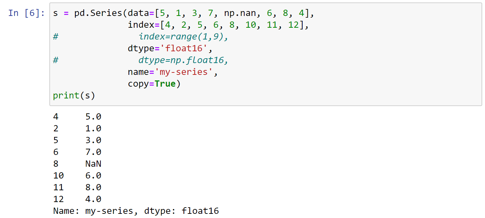

Cú pháp : pd.read_csv('...')
Đọc những cột được chỉ định: usecols=['col1','col2','col3'] or usecols=[0,1,2]
Chế độ mã hóa: encoding="utf8"
Nếu file không có header thì thêm thuộc tính để đánh index cho header: header=None
Nếu muốn hàng nào làm header thì : header=1 hay header=2,.....
Gán data type: dtype={'col1':str,'col2':int32}
Thêm thuộc tính : axis=1 nếu tính theo hàng
axis=0 là mặc định, tính theo cột
một số hàm numpy hỗ trợ: np.sum, np.sqrt ,.... =>df.apply(np.sum) ; df.apply(np.sqrt)
Tự tạo function để apply
def standardize(col):
return (col - col.mean())/(col.max()-col.min())
rating_std = new_df.apply(standardize)
a = df.groupby(["Category"])["Order ID"].unique() ==> trả về các giá trị unique
a = df.groupby(["Category"])["Order ID"].nunique() ==> đếm số lượng unique
a = df.groupby('Category')['Profit'].sum() ==> Nhóm song rồi tính tổng theo cột 'Profit'
Sort theo trường "Name"
axis=0 =>Sort theo cột
ascending = True => tăng dần , "False" giảm dần
inplace= True => sắp xếp trực tiếp trên dataframe, "False" sẽ trả về dataframe mới
nếu có giá trị na_position thì xếp ở đâu : "last" , "first"
thresh = None hoặc integer => số lượng giá trị khác NaN trong dòng hoặc cốt ít nhất là bao nhiêu để không drop
user_ratings.dropna(thresh=10,axis=1).fillna(0)
pd.Series([5, 1, 3, 7, np.nan, 6])
data là giữ liệu cho series
index là các chỉ số index, nếu đặt ko thì mặc định là từ 0
dtype : đặt kiểu dữ liệu cho data
name: đặt tên cho series
copy = True or False, nếu False thì gán trực tiếp mảng trong data cho series, false thì dữ liệu trong data sẽ được copy ra và gán cho series mảng trong data và dừ liệu trong series tách biệt lẫn nhau
 seriesa = pd.Series([5, 1, 3, 7])
a.index = list("1234") => đánh index cho series a từ 1 đến 4
seriesa = pd.Series([5, 1, 3, 7])
a.reset_index() Hoặc
s.reset_index(drop=True, inplace=True)
Nếu không có drop=True, thì index mới sẽ ở ngoài index cũ, drop= True để loại bỏ index cũs.values ,df.values , df.to_numpy()
valuess.describe() => lấy thông tin tổng quát của series như: count, mean, std, max, tứ phân vị
valuess[4] lấy giá trị tại index = 4
s[4] = 5 , gán phần tử tại index 4 bằng giá trị 5, nếu index 4 chưa có trong series => sẽ tự động thêm index 4 và gán giá trị
valuess.iloc[i]
valuess.iloc[i]
valuestương tự như list ,series cũng có thể slicing bằng cách s[1:3] , s[0:10:2] , s[::2] ,..., s['a':'f']
slicinghead(), tail() ,head(10), tail(10),....
head taildf['tên cột'], df.ten-cot, df[['tên cột 1','tên cột 2','tên cột 3']]
dataframe columnCách 1: a = np.random.randint(0, 10, size=(10,4))
df1 = pd.DataFrame(data=a, index=range(1,11), columns=list('ABCD'), dtype='uint8')
Cách 2: d = {'A':[1,2,3,4], 'B':[4,5,8,0], 'C':[4,9,8,7], 'D':[6,5,8,6]}
df2 = pd.DataFrame(d, copy=True)